Team 2386 Programming
This is pretty much just a documentation site but we might throw some other cool stuff up here soon. Who knows?
This isn't our team website, it's just for programming! See 'Other Important Links' for the main team 2386 website.
Important Repositories:
TankBot: link to repository

MiniBot: link to repository

2025: link to repository

2024: link to repository

Other Important Links:
- Github for the website: link
- FRC 2386 Github: link
-
Main 2386 Website: link
-
FAR Robotics Github: link